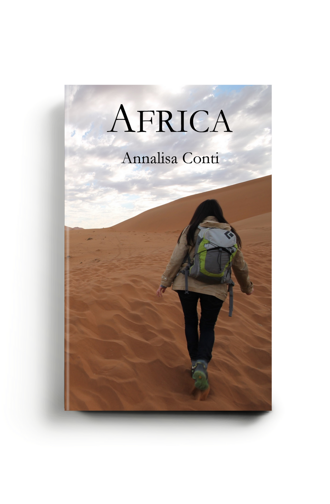

On writing: AFRICA
AFRICA, my second novel, came from a very basic what if: what if my life were to radically change overnight, what if I lost the most important things and people I have today? What would I do?
In June 2014 I had just come back from my honeymoon, and as you can imagine it was one of the most happy and serene moments of my life. You have to know that I have always been a planner and I have always needed to have a Plan B for everything in my life: I had applied to multiple majors in college, to make sure I could be accepted by at least one; I had sent dozens of resume and interviewed in various places when I was first applying for jobs, to be sure I could find something suitable; I had visited countless apartments when I was looking to rent or buy any property, to increase the chances to secure a good spot. This time was not different: even if everything was exactly perfect in June 2014, I started to fill my head with what ifs: what if this happiness should suddenly end? What if anything happened to my newly wed husband? What would I do without him? What if my life was different?
This was my spark, and the beginning of AFRICA, the very first chapter, actually, presents my take on this daunting what if: Amber’s life, the stable existence of a woman who lives in New York with her fiance, is suddenly broken into pieces by the very tragedy I was fearing in my own what ifs. Amber will spend the majority of the novel in a journey that’s very similar to the trip my husband and I took during our honeymoon. The difference? Where we lived an unforgettable experience of beauty and discovery, Amber has to deal with grief and redemption. She has to evaluate the deepest meaning of her life and understand who she is and who she wants to be, now that her life can’t be what it was before the tragedy.
I wouldn’t say I would be ready to face any challenge or shock, but writing AFRICA helped me think about how could I possibly face loss, as I hope it could help anybody who find themselves in a similar situation.